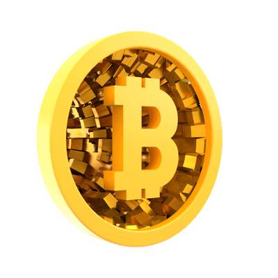

I- Comment a été créé le Bitcoin
-
En octobre 2008, au plus fort de la crise financière, un document a été publié (dit "white paper") définissant le cadre d'une monnaie numérique, le bitcoin, s'émancipant de toute autorité légale.
Le 18 août 2008, une personne anonyme réservait le nom de domaine d’un site internet pour le moins évocateur : bitcoin.org. Il posait ainsi les bases de la première monnaie électronique mondiale sur laquelle aucune autorité ne pouvait exercer son contrôle.
II- Qu'est-ce que le Bitcoin ?
-
Bitcoin n'existe pas physiquement et ne dépend d'aucune banque centrale, on peut le definir étant une monnaie virtuelle utilisable dans le WEB avec certaines fonctionnalités. Il ne peut pas être désactivé : son système est basé sur un réseau, une "blockchain" alimentée par dix mille ordinateurs répartis sur toute la planète.Il faut y voir un gigantesque registre soi-disant inviolable dans lequel un historique de toutes les transactions est enregistré.
Son caractère open-source garantit que toutes ses transactions, ainsi que l'émission de bitcoins, sont collectivement sécurisées par des génies des maths, de la cryptographie, des participants au réseau appelés mineurs.
-

III- À quoi sert le Bitcoin ?
-
Bitcoin est un système expérimental de transfert et de vérification de propriété peer-to-peer sans aucune autorité centrale. C'est un des réseaux principaux de transfert d'argent dans le WEB.
Ce dernier fut créé avec l'objectif d'éviter l'inflation et un monde dans lequel les pièces physiques règnent avec l'autorité des banques. Ce dernier a un système régulateur très performant, l’inflation limitée du système Bitcoin est distribuée de façon homogène par puissance de calcul à travers le réseau, et sera limitée à 21 millions d’unités divisibles jusqu’à la huitième décimale.
Ainsi, ce dernier possède un réseau de transactions qui est moins coûteux que les banques et plus rapide quant à l'envoi à l'international.
IV- Une grande influence économique
-
De grands acteurs du numérique comme Paypal mais aussi des petites entreprises dans certaines grandes villes acceptent le bitcoin.
Les banques centrales s'intéressent aussi aujourd'hui aux monnaies virtuelles.
Il y a un consensus sur le fait qu'il faut accepter le bitcoin, car c'est un moyen de paiement comme un autre. Ainsi certains pays comme le Salvador veulent rendre le bitcoin leur principale monnaie
pouvant considérablement augmenter l'économie de ses derniers car le cours du bitcoin est très volatile, ce dernier étant le premier du marché des cryptos a réussi à attendre un ATH de presque €60.000 euros l'unité avec un market cap de €647,439,950,833.
V- Impact écologique

-
Les coupables ? Les puces électroniques, baptisées Asic, utilisées pour le minage de Bitcoin, c’est-à-dire les calculs informatiques qui permettent de valider les transactions. Leur durée de vie selon les chercheurs : 1,3 année ! Les mineurs doivent donc en changer constamment pour bénéficier des dernières versions et être le plus efficaces possibles. Problème : les « vieilles » puces ne peuvent pas être réutilisées pour autre chose que le minage, pointent les auteurs de l’étude.
Cette étude ne fait toutefois pas l’unanimité. Certains observateurs (et défenseurs du Bitcoin) arguent que la longévité des équipements est en réalité plus importante que celle avancée par les auteurs.
En 2020, le minage de Bitcoin chinois était alimenté par du charbon à 40 % C’est l’estimation de chercheurs chinois dont l’étude a été publiée dans Nature Communication en avril 2021. Selon ces chercheurs, les émissions de carbone liées au processus de « minage » de la cryptomonnaie pourraient atteindre 130 millions de tonnes en 2024 en Chine. Soit l’équivalent des émissions de CO2 annuelles de la République Tchèque. De quoi sérieusement enrayer l'objectif de neutralité carbone du pays... A ce titre, l’impact environnemental est l’une des raisons invoquées par Pékin pour justifier le durcissement de sa politique envers les cryptomonnaies et l'interdiction du minage dans certaines régions.
La découverte de nouveaux bitcoins est de plus en plus ardue et nécessite des ressources informatiques de plus en plus puissantes. L’ensemble des ordinateurs du réseau Bitcoin aurait une puissance 100 000 fois supérieure aux 500 ordinateurs les plus puissants et rapides de la planète.
Chaque transaction de Bitcoin nécessite la même quantité d’énergie que celle consommée pendant une journée par 9 foyers américains (soit environ 250 kWh) et la consommation annuelle imputable à cette cryptomonnaie (33 TWh) équivaut celle d’un pays comme la Bulgarie.
1 transaction de Bitcoin = consommation journalière de 9 foyers américains
1 transaction de Bitcoin = 122 kg de CO2
1h de minage = consommation annuelle de 15 personnes
En 2020, consommation du Bitcoin = consommation de la Terre entière
Sources utilisées